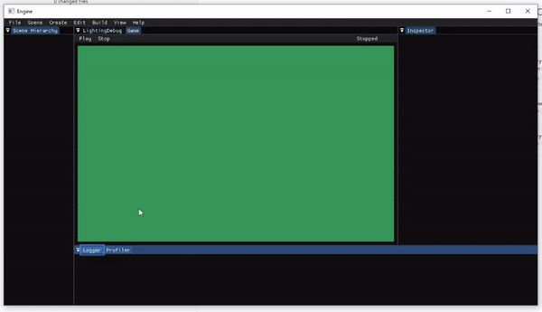
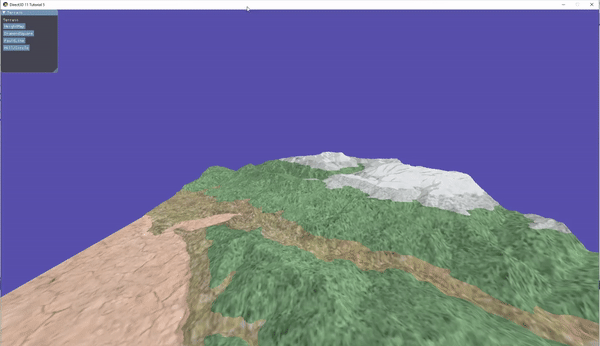
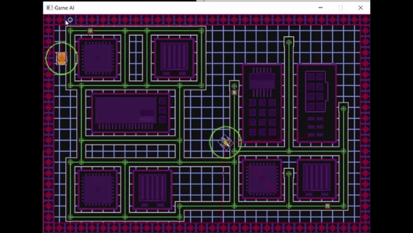
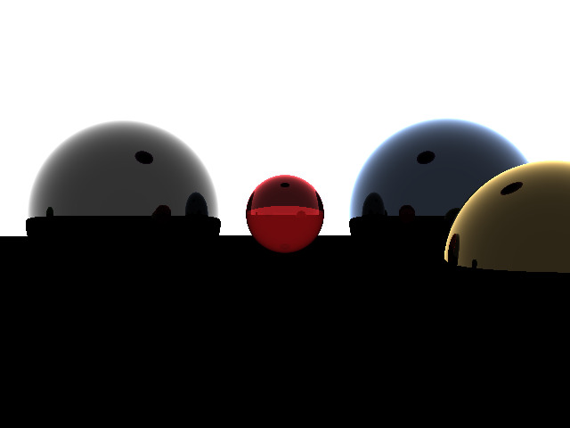

Hi, I’m Sam and I am a video game programmer, and hopefully you are looking to hire me. I am currently looking for work after achieving a Frist at Staffordshire University on Computer Games Programming BSC(Hons). I have had a Keen interest in programming since secondary school, and have been studying it since.
My passion for gamming also goes back as far as I can remember, I started life playing video games like Voodoo vince and Blinx: The Time Sweeper on the original Xbox. And still find time to play many new games mostly on PC now.
I have also been lucky enough to participate in the UKIE Green Jam 2019, this was a learning experience for me and my teammates, as up until then we have had our projects with structure and were all made individually. The experienced gained from this ordeal is indispensable.
Sam Crook

A little bit about me
Unity boardgame project (C# / Unity)
Since leaving uni I have been making a few projects such as this one.
I am attempting to make a game in unity which recrates what it would feel like to be a game piece. Imagine you have been shrunk down to the size of a D&D miniature and you have an entire world to explore.
All from your groups tabletop. I do not claim to be an artist and many of the assets (art wise) I have taken from the Unity store page.
Tile Based Puzzle game
The game all takes place from an isometric viewpoint. And it is up to the player to get the highest score from this bird’s eye view.
Unity game project (C# / Unity)

A collaborative project in which a group of 4 of us set out to make a single player game, with mechanics inspired by darkest dungeon and other rogue-likes, as well as some taken from TTRPGs.
The project was complete over a few weeks and featured quests, character customisation, A hub, scenario editor, enemy AI. Th e majority of my contribution went towards the hub and quest systems.
The project was never fully realised, but I would one day like to go back and revisit it. implementing some of the features that never made it, and fixing those that did, but didn’t work well.
University projects
DirectX 11 graphics (C++ / DirectX 11)

This project took place in the first semester of my third year. Using a base DirectX 11 framework I adapted it so the scene could be render with various post processing effects.
The user can switch between and use effects commonly found in most post processing shaders, these effects include: parallax, normal mapping, render to fullscreen quad, colour shifting, depth of field, and some custom made effects namely the hallucination effect.
Custom Game engine (C++ / imgui/ lua)
This was my final project at Uni
A collaborative group work project consisting of 8 people split into a team of engine programmers and a team of gameplay programmers. In which I was an engine programmer.
The engine could make custom 2d platformer type games, all within the custom-built editor. The engine relied on an entity component system. Also built in was a custom scripting system that utilised lua as it’s language.
3D animation with rigged skeleton (C++ / DirectX 11/ imgui)

In this project I made a 3D animation in DirectX 11, the model can use either key frames of have individual bones moved
The video featured showcases a FBX model, but is capable of using many more
Custom Game engine (C++ / DirectX 11/ imgui)
In this project I made procedurally generated terrain using various diffrent methods.
The program uses 3 diffrent methods for procedurally generating, Diamond / Square, Fault line, and Hill / circle. The shader would dynamically assign a different texture to the terrain depending in its height in the Y coorinate.
Also availible is the option to load a height map in from RAW image file.
DirectX 11 physics (C++ / DirectX 11)

This project took place in the second semester of my second year. Using a base DirectX 11 framework I adapted it so that objects would have a physicis based element to them, making use of priciples such as gravity, point mass, collision, buoyancy and rigid bodies and quaternions.
The user can interact with various scene elements to make them collide with each other. a particle system has also been set up, the user can decide on what type of system they want to use, such as fountain, explode, or black hole
DirectX 11 scene (C++ / DirectX 11)

This project took place in the first semester of my second year. Using a base DirectX 11 framework I adapted it so that the player could move around in a 3D scene, of a water based environment.
The player controls the submarine; the player can use 4 different camera angles to do so. The scene allows for various different materials, lighting models and camera angles the scene is very customizable and can be entirely changed to show a wide variety of different things, anything form an empty field to a busy city; although it lacks the AI to allow for autonomous cars.
Tank AI (c++)
This project took place in the first semester of my second year. Using a base framework I createed a tank that would make use of pathfinding and and mix of finite-state machine.
The tank would be able to fight with other tanks, using a range of multiple different weapon types. and if damaged would seek out health packs, or if out of ammo seek out a refill.
Old projects
Some older projects from my time at uni
Pacman like game (C++)

Mario like game (C++ / SDL)

OpenGL 3D scene (C++ / OpenGL / FreeGLUT)

Ray Traced balls (c++ / custom)

Other projects
UKIE games jam 2019 (C# / Unity)

This was the first games jam that I participated in, and although I had touched on Unity whist studying at college, this was the first time that I had really used Unity. I grouped up with 5 other members, and when the day came we started brainstorming ideas for what kind of game we wanted to make. We settled on a resource management game in which the human population had to restart after our actions had destroyed the earth. The player would act as god and help the population thrive in this new world. To do so the player could put down a starting location and use certain powers to change the landscape and to make the world more hospitable.
As this was the first time using unity for many of the group we very quickly became stuck with multiple issues, as the game was title based we went about creating an AI that could interact with the tiles in a way that unity would allow. Although we didn’t truly make a game we did learn many invaluable lessons such as: time management and knowing our limits.
If you would like more infomation about myself or my code code feel free to get in touch.